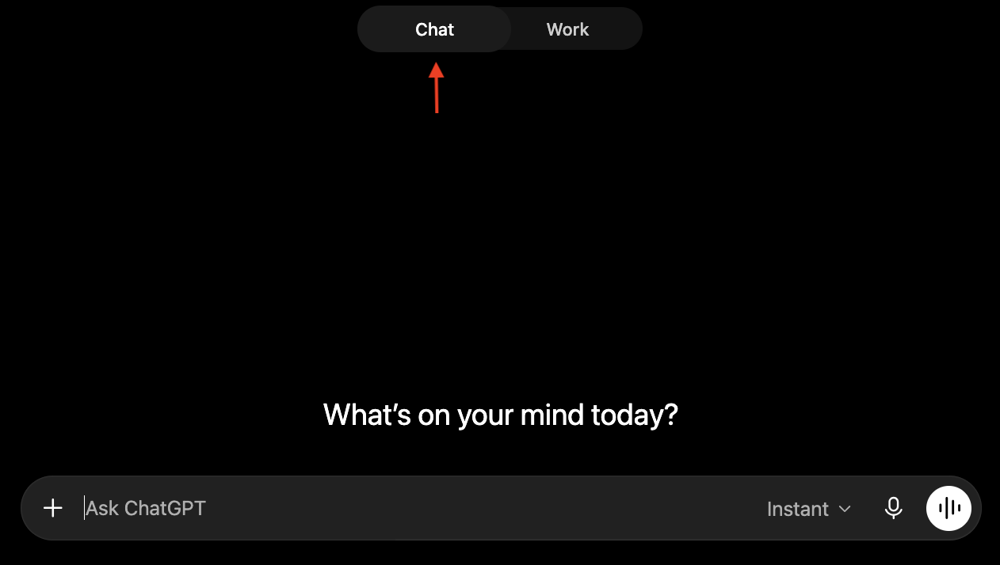
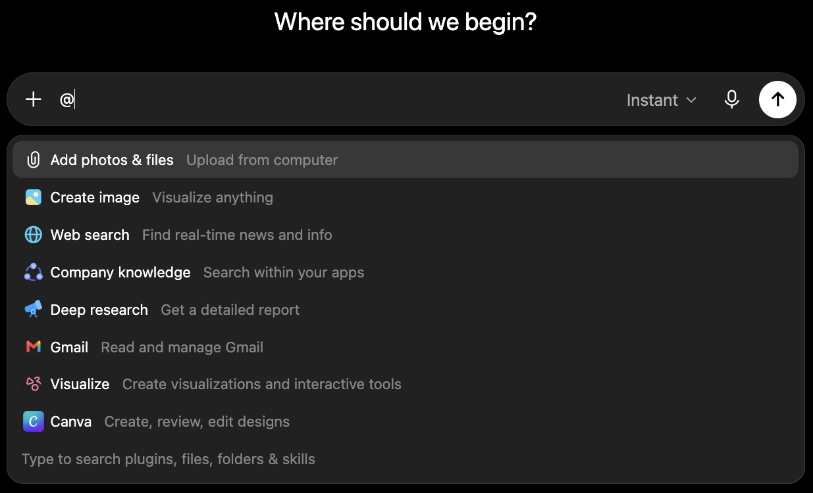

Chat
Chat is the basic ChatGPT chat experience. The Business plan adds some additional features that let you do more with Chat than conversation alone.

When you start a new chat, make sure Chat is selected.
When to use Chat
Chat is for smaller tasks: quick questions, finding and summarizing emails or documents, drafting replies, brainstorming, et cetera. If a lot of your work is mainly administrative tasks, Chat may be nearly all you need.
If your work is heavier and long-running — e.g. analyzing data from many spreadsheets or synthesizing long texts using many sources — you'll spend more of your time in Work or Codex which are covered later in this guide.
That isn't to say that the models used for Chat are dumber than the Work/Codex models. Chat is still capable of tasks like research and analysis. The Work/Codex models are just configured with different tools and instructions more suited for those tasks.
@-mentions
Press the + button in the message box, or type @, to open a menu of available tools. From there you can reach for a tool like the image generator, tag a plugin, or route your prompt to a specialized agent.

Open the tool menu with the + button or by typing @.
Try it yourself
Ask ChatGPT:
“@Presentations make me a 3-slide overview on good email etiquette”
Expected outcome: the @ pulls in the Presentations tool, and ChatGPT uses it to create the requested slideshow.
You don't always have to tag a tool. ChatGPT can see which ones are available and will often reach for the right one on its own. For example, asking ChatGPT to “generate an image of a dog” usually fires up the image tool with no tag at all. Tagging mainly makes answers faster and more reliable; a few tools also won't run unless you tag them, so it's good practice to tag.